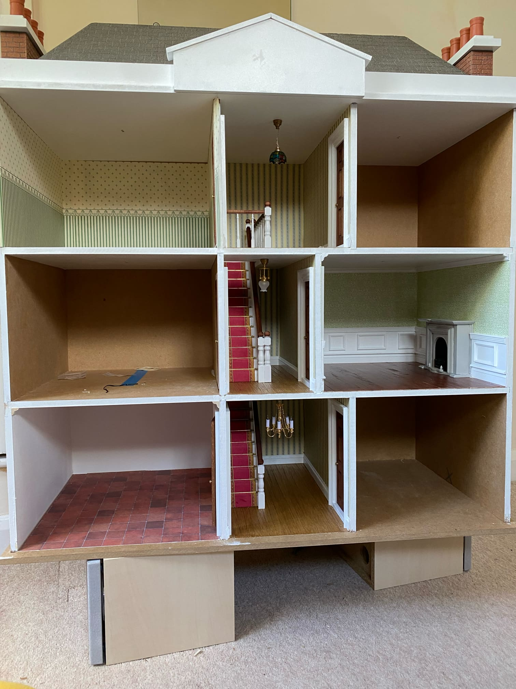
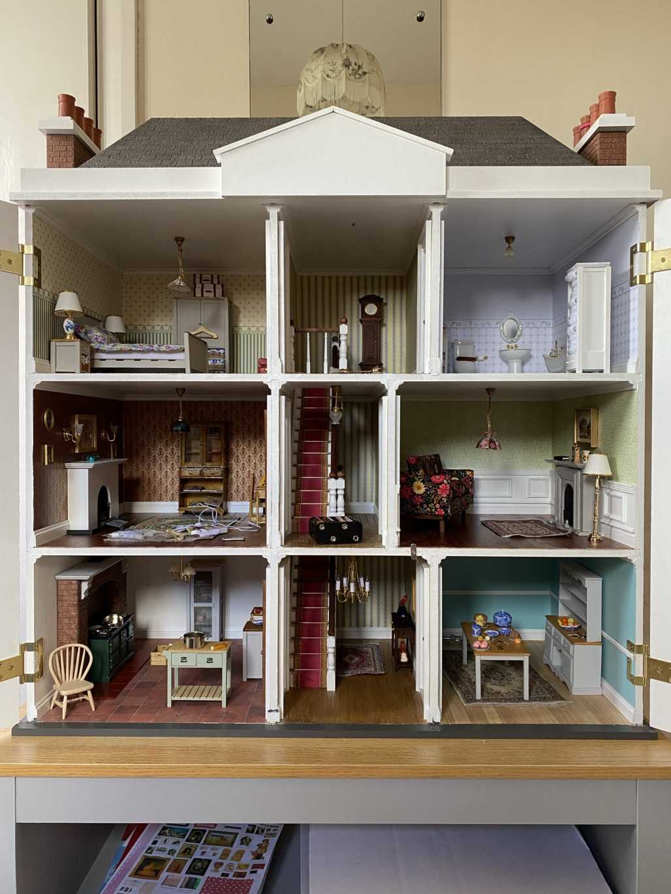
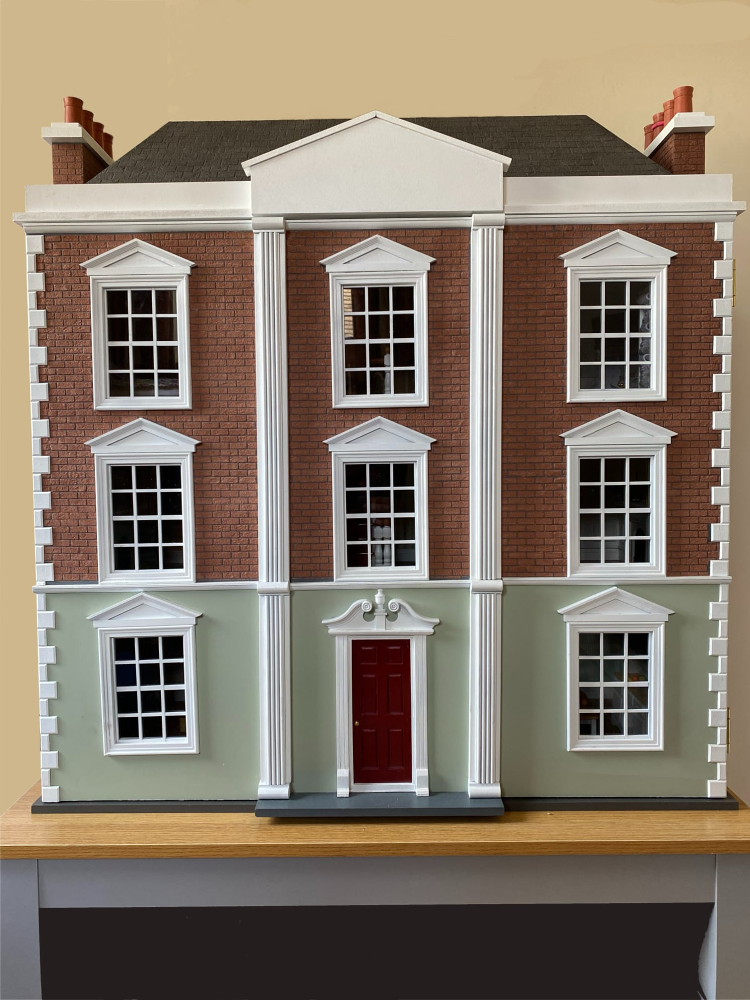

Stages of the Build

Parts Supplied
The essential wooden parts for assembly were delivered as part of the kit.

Dry Build
To start the main structure was assembled without glue to ensure proper fit and alignment.

Walls, Floors, and Ceilings Added
After the dry build, walls, floors, and ceilings were added to define each room.

External Walls Rendered and painted
The external walls were rendered and painted to give the house its finished look.

Roof and Chimneys Added
The next stage involved adding the roof and chimneys to the exterior structure.

Interior Lighting Installed
The interior lighting system was installed to enhance the ambiance and functionality of the rooms.

Completed Staircase and Landing
The staircase and landing were completed in a Georgian style, providing access between the different levels of the doll's house.

Completed Internal Structure
The internal structure of the doll's house was completed, showcasing the detailed craftsmanship and design.

Completed House
The doll's house was completed, showcasing the detailed craftsmanship and design.